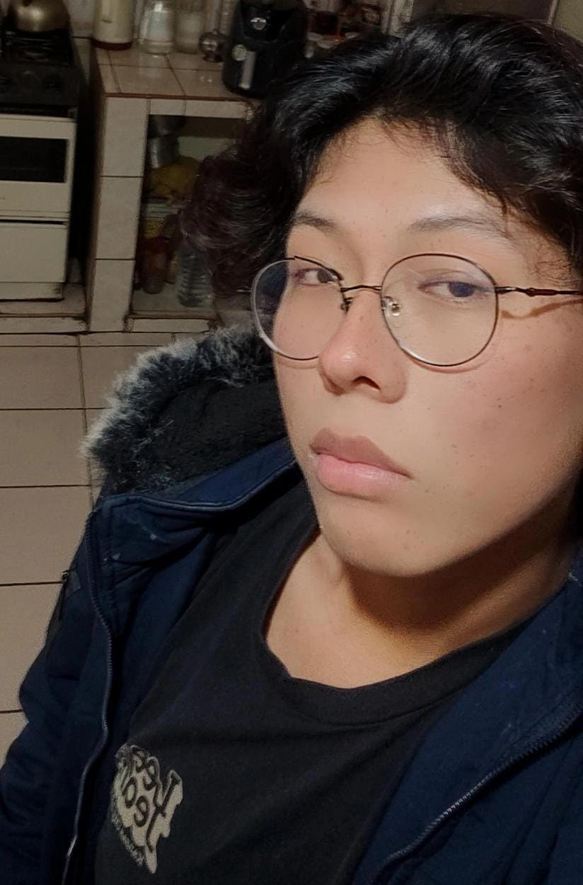

♡ Presentacion Personal
Mi nombre es Fabricio Oscar Quispe Morales con 17 años de edad,naci en la ciudad de Arequipa y he vivido siempre en esta ciudad.

♡ Sobre mi:
Soy una persona que se caracteriza por la Empatia, honestidad, respeto y perserverancia. Lo que me apasiona de poder interactuar con la tecnologia de una manera mas
eficiente y poder crear aplicaciones que puedan llegar a servir para que las pesronas tengan una vida mas sencilla y que pueda reemplazar labores cotidianas segun lo que se este solicitando. Tambien me gusta el deporte mas frecuentemente futbol y tambien voy al gimnasio ocasionalmente debido al nuevo horario que se impuso
. Me encanta la musica, el podedr degustarla y poderme sentir y expresar lo que realmente siento cantando cada letra.
Me encanta y fascina jugar videojuegos y tambien entender como funcionan y ver si se puede modificar "skins" como se le diria
♡ Tecnologias y Lenguajes de Programacion:
► Python
► Java Script
► CSS
► SQL
► HTML
► C++
♡ Formacion Profesional:
Actualmente estoy realizando mis estudios superiores en el Instituto TECSUP siendo estudiante de 3º semestre de la carrera de Diseño y Desarrollo de Software.
♡ Idiomas:
►Español: Nativo
►Ingles: Intermedio